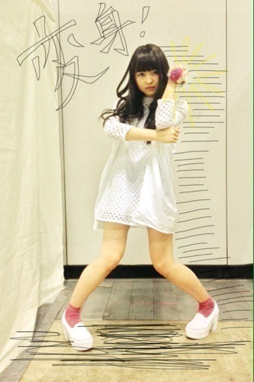

| 2014/03 07 Fri | スローモーション。 553回目 |

最近兄とカレー作ったんだ
ってねねに報告したら
私は小5で一人で作ってたよ
って笑顔で返されました。
まだまだ寒いけど
もう花粉が飛んでます。
春になったら辛いなーー
鼻にくるよーー
昨日はNOGIBINGO!2の
最終収録でした！
あっという間だったなあ。
1とはまた違って、肩の力をぬいて
収録できていたかもです。
あと、最近は
いろいろな撮影してます

気づいたら片想いのMV
公開されましたー
曲もダンスも好き。
昨日初めて楽屋で見たけど涙腺が...
カップリングもこれから
続々と公開されます。
アンダー曲は表題曲とは
違ってポップな感じなんだよ〜
33色のラブストーリー
マスタード色の女の子
先輩に憧れてる後輩を演じています。
今は友達編ですが
告白編、恋人編と続くので
電話してみてね！
きゃーーーーーー

はずかしーーーーーー
もうこの勢いで変身するわー
しゃきーーーーん！

まりか
コメント(662)
2014/03/07 21:48